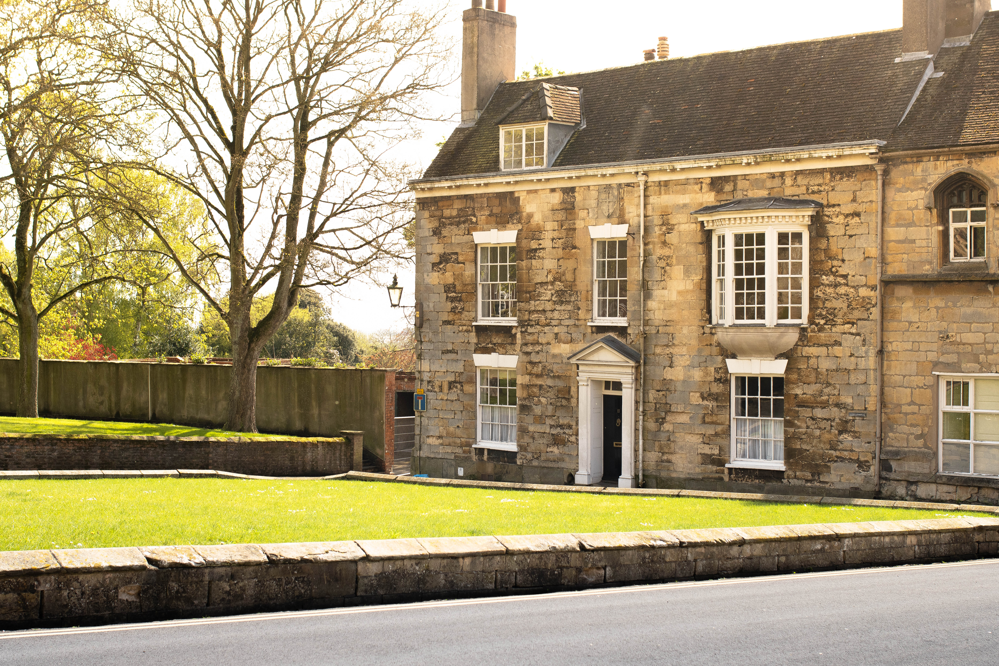

About Us
Patron Reviews
Our Menu
Whats My Coffee?
About Us
Reviews
Our Menu
My Coffee?
Common Grounds
Espresso (single or double) – shot of the coffee of your choice
Americano – Double shot of espresso, with hot water.
Flat White – Double shot of espresso with flat, steamed milk.
Cappuccino – Double shot of espresso, equal parts steamed milk and foam.
Latte – Double shot of espresso, steamed milk, small layer of foam.
Mocha – Hot chocolate with double shot of espresso and steamed milk.
Hot Chocolate – Rich, hot chocolate with steamed milk and small layer of foam.
Breakfast Tea – Bold and full-bodied tea.
Herbal Tea – various flavours (peppermint, green, camomile, red berry).
Iced Latte – Single shot of espresso, combined with cold milk and served over ice.
